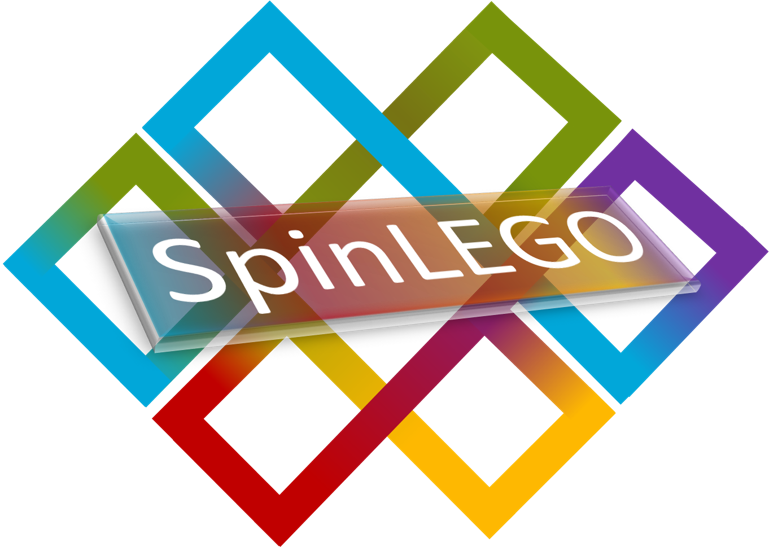

Spintronics with Chiral Helimagnetic Insulators
Exploring spin transport properties in noncollinear magnetic materials
Start
Projects
Team
Publications
Contact
Past Events
JUN
27
TRR 360 Sonderseminar:
Ultrafast spin-orbitronics with terahertz electromagnetic pulses
Find out more